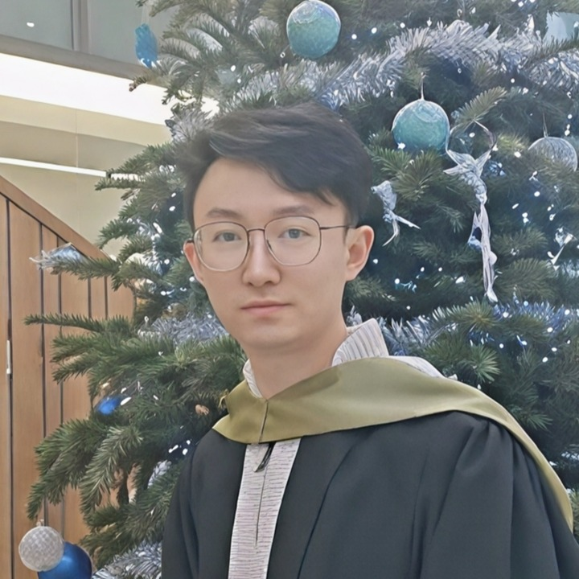

PhD Student
Tadiyos Hailemichael Mamo
Research: Causal representation learning.
Prev.: University of Electronic Science and Technology of China.

Assistant Professor, Queen's University Belfast
Dr. Feng leads the QUB ML Lab, working on robust machine learning, computer vision, and AI safety under imperfect information. A full biography, publication record, and service record are available on his personal website.
PhD Student
Research: Causal representation learning.
Prev.: University of Electronic Science and Technology of China.
PhD Student
Research: LLM/MLLM safety.
Prev.: [Previous Institution].
PhD Student
Research: Foundation models for multimodal data.
Prev.: [Previous Institution].
Visiting Student
Research: Robust medical imaging.
Prev.: [Previous Institution].
Queen Mary University of London
Queen Mary University of London and Samsung AI Center
University College London
University of Trento
Koç University, KUIS AI Center